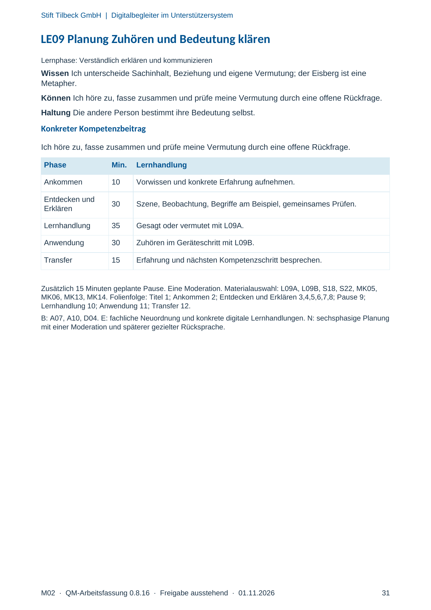
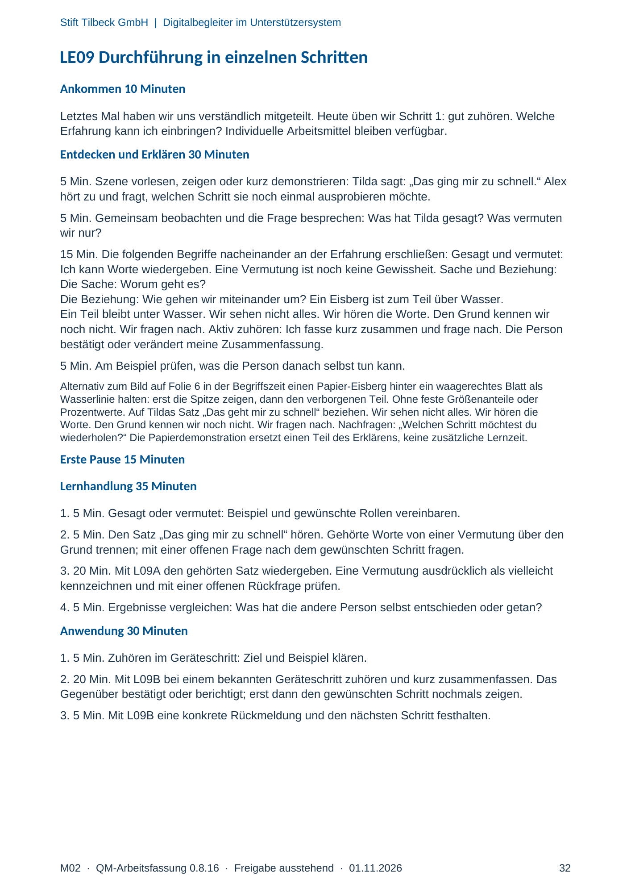
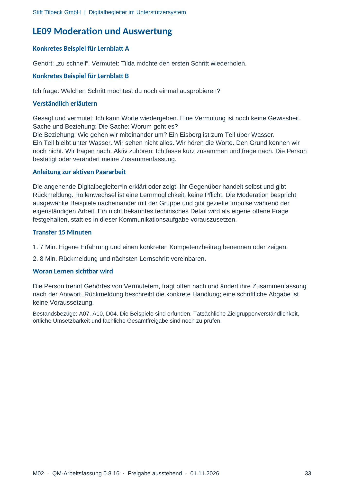

M02 · Originalseite 31, 32, 33
Handbuch und Muster
Gezielte Original-Druckauswahl.
Fragen und Ankreuzfelder werden auf dem Ausdruck bearbeitet. Die Lesefassung speichert keine Antworten.
Lesefassung · Seite 31
Stift Tilbeck GmbH | Digitalbegleiter im Unterstützersystem
M02 · QM-Arbeitsfassung 0.8.16 · Freigabe ausstehend · 01.11.2026 31
LE09 Planung Zuhören und Bedeutung klären
Lernphase: Verständlich erklären und kommunizieren
Wissen Ich unterscheide Sachinhalt, Beziehung und eigene Vermutung; der Eisberg ist eine
Metapher.
Können Ich höre zu, fasse zusammen und prüfe meine Vermutung durch eine offene Rückfrage.
Haltung Die andere Person bestimmt ihre Bedeutung selbst.
Konkreter Kompetenzbeitrag
Ich höre zu, fasse zusammen und prüfe meine Vermutung durch eine offene Rückfrage.
Phase Min. Lernhandlung
Ankommen 10 Vorwissen und konkrete Erfahrung aufnehmen.
Entdecken und
Erklären 30 Szene, Beobachtung, Begriffe am Beispiel, gemeinsames Prüfen.
Lernhandlung 35 Gesagt oder vermutet mit L09A.
Anwendung 30 Zuhören im Geräteschritt mit L09B.
Transfer 15 Erfahrung und nächsten Kompetenzschritt besprechen.
Zusätzlich 15 Minuten geplante Pause. Eine Moderation. Materialauswahl: L09A, L09B, S18, S22, MK05,
MK06, MK13, MK14. Folienfolge: Titel 1; Ankommen 2; Entdecken und Erklären 3,4,5,6,7,8; Pause 9;
Lernhandlung 10; Anwendung 11; Transfer 12.
B: A07, A10, D04. E: fachliche Neuordnung und konkrete digitale Lernhandlungen. N: sechsphasige Planung
mit einer Moderation und späterer gezielter Rücksprache.
Originalseite ansehen

Lesefassung · Seite 32
Stift Tilbeck GmbH | Digitalbegleiter im Unterstützersystem
M02 · QM-Arbeitsfassung 0.8.16 · Freigabe ausstehend · 01.11.2026 32
LE09 Durchführung in einzelnen Schritten
Ankommen 10 Minuten
Letztes Mal haben wir uns verständlich mitgeteilt. Heute üben wir Schritt 1: gut zuhören. Welche
Erfahrung kann ich einbringen? Individuelle Arbeitsmittel bleiben verfügbar.
Entdecken und Erklären 30 Minuten
5 Min. Szene vorlesen, zeigen oder kurz demonstrieren: Tilda sagt: „Das ging mir zu schnell.“ Alex
hört zu und fragt, welchen Schritt sie noch einmal ausprobieren möchte.
5 Min. Gemeinsam beobachten und die Frage besprechen: Was hat Tilda gesagt? Was vermuten
wir nur?
15 Min. Die folgenden Begriffe nacheinander an der Erfahrung erschließen: Gesagt und vermutet:
Ich kann Worte wiedergeben. Eine Vermutung ist noch keine Gewissheit. Sache und Beziehung:
Die Sache: Worum geht es?
Die Beziehung: Wie gehen wir miteinander um? Ein Eisberg ist zum Teil über Wasser.
Ein Teil bleibt unter Wasser. Wir sehen nicht alles. Wir hören die Worte. Den Grund kennen wir
noch nicht. Wir fragen nach. Aktiv zuhören: Ich fasse kurz zusammen und frage nach. Die Person
bestätigt oder verändert meine Zusammenfassung.
5 Min. Am Beispiel prüfen, was die Person danach selbst tun kann.
Alternativ zum Bild auf Folie 6 in der Begriffszeit einen Papier-Eisberg hinter ein waagerechtes Blatt als
Wasserlinie halten: erst die Spitze zeigen, dann den verborgenen Teil. Ohne feste Größenanteile oder
Prozentwerte. Auf Tildas Satz „Das geht mir zu schnell“ beziehen. Wir sehen nicht alles. Wir hören die
Worte. Den Grund kennen wir noch nicht. Wir fragen nach. Nachfragen: „Welchen Schritt möchtest du
wiederholen?“ Die Papierdemonstration ersetzt einen Teil des Erklärens, keine zusätzliche Lernzeit.
Erste Pause 15 Minuten
Lernhandlung 35 Minuten
1. 5 Min. Gesagt oder vermutet: Beispiel und gewünschte Rollen vereinbaren.
2. 5 Min. Den Satz „Das ging mir zu schnell“ hören. Gehörte Worte von einer Vermutung über den
Grund trennen; mit einer offenen Frage nach dem gewünschten Schritt fragen.
3. 20 Min. Mit L09A den gehörten Satz wiedergeben. Eine Vermutung ausdrücklich als vielleicht
kennzeichnen und mit einer offenen Rückfrage prüfen.
4. 5 Min. Ergebnisse vergleichen: Was hat die andere Person selbst entschieden oder getan?
Anwendung 30 Minuten
1. 5 Min. Zuhören im Geräteschritt: Ziel und Beispiel klären.
2. 20 Min. Mit L09B bei einem bekannten Geräteschritt zuhören und kurz zusammenfassen. Das
Gegenüber bestätigt oder berichtigt; erst dann den gewünschten Schritt nochmals zeigen.
3. 5 Min. Mit L09B eine konkrete Rückmeldung und den nächsten Schritt festhalten.
Originalseite ansehen

Lesefassung · Seite 33
Stift Tilbeck GmbH | Digitalbegleiter im Unterstützersystem
M02 · QM-Arbeitsfassung 0.8.16 · Freigabe ausstehend · 01.11.2026 33
LE09 Moderation und Auswertung
Konkretes Beispiel für Lernblatt A
Gehört: „zu schnell“. Vermutet: Tilda möchte den ersten Schritt wiederholen.
Konkretes Beispiel für Lernblatt B
Ich frage: Welchen Schritt möchtest du noch einmal ausprobieren?
Verständlich erläutern
Gesagt und vermutet: Ich kann Worte wiedergeben. Eine Vermutung ist noch keine Gewissheit.
Sache und Beziehung: Die Sache: Worum geht es?
Die Beziehung: Wie gehen wir miteinander um? Ein Eisberg ist zum Teil über Wasser.
Ein Teil bleibt unter Wasser. Wir sehen nicht alles. Wir hören die Worte. Den Grund kennen wir
noch nicht. Wir fragen nach. Aktiv zuhören: Ich fasse kurz zusammen und frage nach. Die Person
bestätigt oder verändert meine Zusammenfassung.
Anleitung zur aktiven Paararbeit
Die angehende Digitalbegleiter*in erklärt oder zeigt. Ihr Gegenüber handelt selbst und gibt
Rückmeldung. Rollenwechsel ist eine Lernmöglichkeit, keine Pflicht. Die Moderation bespricht
ausgewählte Beispiele nacheinander mit der Gruppe und gibt gezielte Impulse während der
eigenständigen Arbeit. Ein nicht bekanntes technisches Detail wird als eigene offene Frage
festgehalten, statt es in dieser Kommunikationsaufgabe vorauszusetzen.
Transfer 15 Minuten
1. 7 Min. Eigene Erfahrung und einen konkreten Kompetenzbeitrag benennen oder zeigen.
2. 8 Min. Rückmeldung und nächsten Lernschritt vereinbaren.
Woran Lernen sichtbar wird
Die Person trennt Gehörtes von Vermutetem, fragt offen nach und ändert ihre Zusammenfassung
nach der Antwort. Rückmeldung beschreibt die konkrete Handlung; eine schriftliche Abgabe ist
keine Voraussetzung.
Bestandsbezüge: A07, A10, D04. Die Beispiele sind erfunden. Tatsächliche Zielgruppenverständlichkeit,
örtliche Umsetzbarkeit und fachliche Gesamtfreigabe sind noch zu prüfen.
Originalseite ansehen
